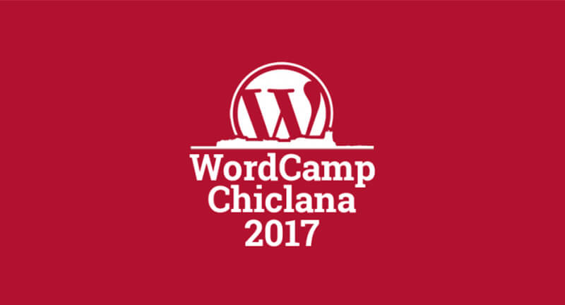
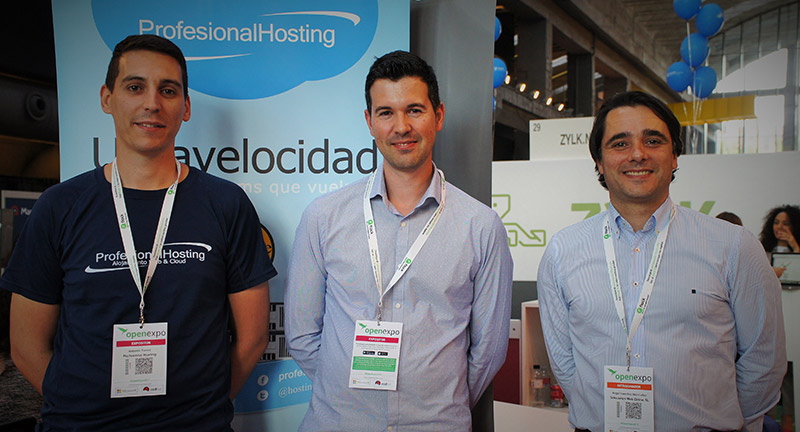

<ion-header>
  <ion-navbar color="primary">
    <button ion-button menuToggle>
      <ion-icon name="menu"></ion-icon>
    </button>
    <ion-title>
      ProfesionalHosting
    </ion-title>
  </ion-navbar>
</ion-header>

<ion-content padding> 

  <ion-slides pager>
    
    <ion-slide>
      
    </ion-slide>
    
    <ion-slide>
      
    </ion-slide>
    
    <ion-slide>
      
    </ion-slide>
    
  </ion-slides>

  <h2 class="titulo">WordCamp Chiclana 2017</h2>
  <p>Bienvenido a nuestra primera aplicación móvil realizada en Ionic + WordPress</p>

  <ion-grid>
      <ion-row>
        <button ion-button icon-left color="danger">
          <ion-icon name="logo-youtube"></ion-icon>
          Youtube
        </button>
        <button ion-button icon-left color="primary">
          <ion-icon name="logo-twitter"></ion-icon>
          Twitter
        </button>
      </ion-row>
    </ion-grid>

</ion-content>
